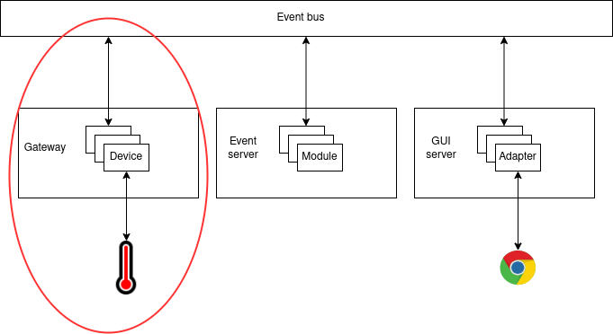
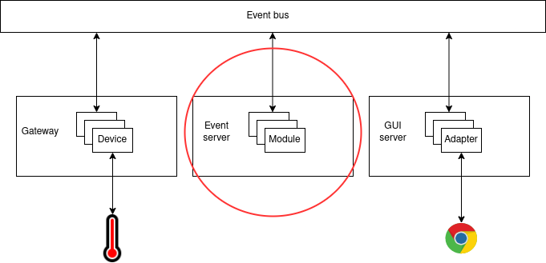
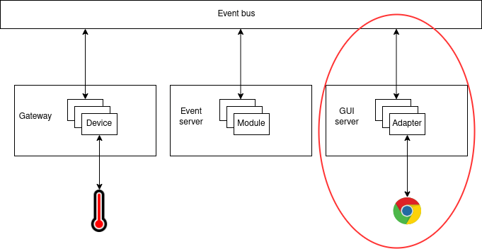

Modbus hat aplikacija¶
U proslom zadatku vidjeli smo kako se spojiti Modbus protokolom na termometar kroz jednostavnu Pyhton skriptu. U ovom dijelu implementiramo slicnu stvar, koristenjem komponenti iz hat-open projekta. Poglavlje o Hatu temeljito opisuje pojedine komponente a ovdje cemo ih primjeniti za rjesavanje problema s termometrom.
Repozitorij¶
Krecemo s repozitorijem hat-quickstart. Ovo je template repozitorij na temelju kojeg se mogu kreirati novi repozitoriji (Use this template gumb). U repozitoriju su napisane upute kako postaviti razvojno okruzenje. Ono bi trebalo raditi na Linuxu, kod ostalih operacijskih sustava mozda naidete na probleme i u tom slucaju preporucujemo rad ili kroz virtualnu masinu ili kroz docker.
Repozitorij ima par bitnih direktorija. Prvi su src_py i src_js, u
kojima ce se nalaziti implementacija nase aplikacije. Python dio implementacije
fokusirat ce se na ocitanje i obradu podataka, a JavaScript na vizualizaciju
kroz web sucelje. U playground direktoriju imamo razlicite pomocne skripte
i konfiguracije pomocu kojih se sustav moze pokretati. Ostale datateke i
direktoriji se takoder koriste, ali na ove cemo se uglavnom fokusirati tijekom
rada na ovom zadatku. Pozicioniranjem u direktorij playground/run mozemo
pokrenti skriptu system.sh (ili .bat za Windowse), otvoriti
localhost:23023 i vidjeti minimalno graficko sucelje s jednim brojacem.
Bacimo li dublji pogled na to sto se tocno dogada pozivom system skripte,
vidimo da ona pokrece hat-orchestrator komponentu. Ova komponenta sluzi
tome da paralelno starta proizvoljni broj drugih procesa. Pogledamo li njenu
konfiguraciju, u playground/run/data/orchestrator.yaml, vidimo u
components polju koji procesi se sve pokrecu. Vidimo da su to druge
komponente iz hat-open projekta (pogledajte predavanje 3.1. za kratki pregled
komponenti koje postoje i neke njihove generalne svrhe). Za rjesenje problema,
implementirati cemo jedan device, event server modul i adapter. Takoder cemo
prilagoditi view da ima tocniji ispis, tj. da ne pise counter vec
temperature.
Rjesenje¶
Ovdje opisujemo pristup koji uzimamo kad rjesavamo problem, komponentu po komponentu. Krecemo od devicea koji ce nam komunicirati s modbus uredajem, nakon toga implementiramo event server modul, koji ce obavljati izracun temperature (djeljenje s 10 jer protokol salje vrijednost pomnozenu s 10), iza toga adapter koji ce pripremati te podatke za vizualizaciju, i konacno view kojeg cemo prilagoditi da prikazuje podatke. U quickstart repozitoriju vec postoje primjeri za svaki od ovih tipova specijaliziranih modula, tako da cemo se donekle oslanjati samo na njihovu modifikaciju.
Device¶
Zelimo implementirati device koji ce svakih nekoliko sekundi slati Modbus
zahtjev za citanje na termometar i registrirati dogadaj s informacijom koja je
primljena preko protokola. Slicnu funkcionalnost smo vec implementirali u
drugom zadatku, samo sad ju trebamo upakirati u implementaciju devicea i
umjesto ispisa na konzolu, registrirati dogadaj. Implementacija uredaja u
src_py/project/devices/example.py je u principu dovoljno dobra, glavna
modifikacija koju trebamo napraviti je prilagodba countera. Example verzija
uredaja se ne spaja na nista nego samo ima jedan interni brojac kojeg
inkrementira svakih nekoliko sekundi. Umjesto toga, mi se zelimo spojiti na
termometar i svakih nekoliko sekundi registrirati ocitanje s njega. Takoder,
putanja project/devices/example je malo nejasna, tako da cemo ju
preimenovati u nesto sto ima smisla za nas projekt:
workshop/devices/modbus.
Primjetimo da sad vise ne mozemo pozvati sustav kroz system.sh/bat. Razlog
tome je upravo ova promjena putanje, device koji konfiguriramo u gatewayu ima
staro Python ime, pa cemo ga prilagoditi u module: workshop.devices.modbus
(u playground/run/data/gateway.yaml). Uz to, dodatno cemo prilagoditi
konfiguraciju tako da damo konkretnija imena deviceu i gatewayu: modbus1 i
gateway1.
Device sad izgleda ovako:
import asyncio
import hat.aio
import hat.event.common
import hat.gateway.common
from hat.drivers import modbus, tcp
json_schema_id = None
json_schema_repo = None
device_type = 'modbus'
async def create(conf, event_client, event_type_prefix):
device = Device()
device._async_group = hat.aio.Group()
device._event_client = event_client
device._event_type_prefix = event_type_prefix
device._task = asyncio.create_task(device._main_loop())
return device
class Device(hat.gateway.common.Device):
@property
def async_group(self):
return self._async_group
async def _main_loop(self):
modbus_type = modbus.ModbusType.TCP
address = tcp.Address('161.53.17.239', 8502)
master = await modbus.create_tcp_master(modbus_type, address)
while True:
data = await master.read(
device_id=1,
data_type=modbus.DataType.HOLDING_REGISTER,
start_address=4003, quantity=1)
self._event_client.register([
hat.event.common.RegisterEvent(
event_type=(*self._event_type_prefix,
'gateway', '4003'),
source_timestamp=None,
payload=hat.event.common.EventPayload(
type=hat.event.common.EventPayloadType.JSON,
data=data[0]))])
Trebalo bi se moci pokrenuti, no sad smo uveli promjene zbog kojih osnovni quickstart primjer nece moci samostalno raditi. Ali, to ce se promijeniti kad prilagodimo ostale komponente.
Modul¶
Sad se prebacujemo na event server module. Ako pogledamo koji moduli postoje,
vidjet cemo direktorij src_py/project/modules s modulima example.py i
enable_all.py. enable_all mozemo ignorirati, njegova svrha je da
registrira dogadaje za paljenje deviceova (vise info u poglavlju o Hatu).
Odmah cemo oba modula prebaciti u workshop/modules, a example cemo
preimenovati u temperature jer cemo ga preinaciti u to da racuna
temperaturu na temelju dogadaja koje registrira device.
Znamo da device registrira ocitanja temperatura u dogadajima s tipom
('gateway', 'gateway1', 'modbus', 'modbus1', 'gateway', '4003'), tako da
cemo pretplatiti modul na taj tip. Nakon toga, nema neke potrebe za vecim
preinakama, osim prilagodbe process metode u sesiji od modula. Ona ce sad
registrirati dogadaj s tipom ('temperature') a payload ce joj biti tocna
temperatura, iznos koji primi preko Modbusa podijeljen s 10.
Implementacija modula izgleda ovako:
import hat.aio
import hat.event.server.common
json_schema_id = None
json_schema_repo = None
_source_id = 0
async def create(conf, engine):
module = Module()
global _source_id
module._source = hat.event.server.common.Source(
type=hat.event.server.common.SourceType.MODULE,
name=__name__,
id=_source_id)
_source_id += 1
module._subscription = hat.event.server.common.Subscription([
('gateway', '?', 'modbus', '?', 'gateway', '4003')])
module._async_group = hat.aio.Group()
module._engine = engine
return module
class Module(hat.event.server.common.Module):
@property
def async_group(self):
return self._async_group
@property
def subscription(self):
return self._subscription
async def create_session(self):
return Session(self._engine, self._source,
self._async_group.create_subgroup())
class Session(hat.event.server.common.ModuleSession):
def __init__(self, engine, source, group):
self._engine = engine
self._source = source
self._async_group = group
@property
def async_group(self):
return self._async_group
async def process(self, changes):
return [
self._engine.create_process_event(
self._source,
hat.event.server.common.RegisterEvent(
event_type=('temperature', ),
source_timestamp=None,
payload=hat.event.common.EventPayload(
type=hat.event.common.EventPayloadType.JSON,
data=f'{event.payload.data / 10}')))
for event in changes]
Ne zaboravimo da je i dalje potrebno uvesti promjene u konfiguraciju, analogne promjenama u gatewayu, dakle imena modula.
Adapter¶
Konacno se fokusiramo na vizualizaciju. Prvi korak je implementacija adaptera
koji bi preko svog sucelja za komunikaciju s web klijentima posluzivao stanje
u kojem je ocitanje temperature. On bi se pretplacivao na ('temperature')
dogadaj koji registriramo u event serverovom modulu.
Ako pogledamo adaptere iz quickstarta, vidimo da postoji
src_py/project/adapters/example.py. Njega cemo prilagoditi da ne radi vise
s brojacem, vec da se pretplacuje na promjene temperature i prosljeduje ih
svojim sesijama. To postizemo implementacijom create_subscription funkcije.
Drugi korak je proslijedivanje temperature sesijama, sto se dogadalo u
_main_loop metodi. Ona zapravo moze biti ista, ali malo cemo prilagoditi
imena varijabli, nema potrebe da se temperatura pohranjuje u privatnim
varijablama adapterove klase itd. Tako dolazimo do sljedece implementacije:
import hat.aio
import hat.event.common
import hat.gui.common
import hat.util
json_schema_id = None
json_schema_repo = None
async def create_subscription(conf):
return hat.event.common.Subscription([('temperature', )])
async def create_adapter(conf, event_client):
adapter = Adapter()
adapter._async_group = hat.aio.Group()
adapter._event_client = event_client
adapter._state_change_cb_registry = hat.util.CallbackRegistry()
adapter._sessions = set()
adapter._async_group.spawn(adapter._main_loop)
return adapter
class Adapter(hat.gui.common.Adapter):
@property
def async_group(self):
return self._async_group
async def create_session(self, juggler_client):
session = Session(
juggler_client,
self._async_group.create_subgroup())
self._sessions.add(session)
return session
async def _main_loop(self):
while True:
events = await self._event_client.receive()
for event in events:
temperature = event.payload.data
for session in self._sessions:
if session.is_open:
session.notify_state_change(temperature)
class Session(hat.gui.common.AdapterSession):
def __init__(self, juggler_client, group):
self._juggler_client = juggler_client
self._async_group = group
@property
def async_group(self):
return self._async_group
def notify_state_change(self, state):
self._juggler_client.set_local_data(state)
Opet cemo promijeniti putanju adapteru tako da ga prebacimo u
workshop/adapter i preimenujemo u temperature.py (nema veze sto je isto
kao i modul, sama cinjenica da su u drugim direktorijima je dovoljna
distinkcija), pa je potrebno prilagoditi i konfiguraciju. Osim promjene
putanje, prilagoditi cemo i ime adaptera iz adapter u temperature.
View¶
Da bi prilagodba bila kompletna, potrebno je prilagoditi i view. Dosad nismo
toliko zalazili u detalje kako se view implementira, ali nam za pocetak oni
nisu ni previse bitni. Implementacija viewa je u
src_js/views/main/index.js. Vidimo da vec postoji neka implementacija koja
ima funkciju vt koja vraca listu. Lista sadrzi ime taga i njegov sadrzaj.
Za graficke prikaze koristimo bibilioteke koje ovakve strukture podataka
pretvaraju u DOM (Document Object Model). Tako kad implementiramo view, ono sto
vrati njegova funkcija proslijeduje se tim bibliotekama i one generiraju DOM s
elementima:
<span>counter: 10</span>
Ocita je jos jedna promjena - izraz r.get('remote', 'adapter', 'counter')
se pretvoro u broj 10. U viewovima preko varijable r pristupamo renderer
objektu (dokumentacija je nekompletna,
bolje mozda gledati kod). Cijela ideja iza renderera je da on ima neko svoje
stanje i na temelju tog stanja generira DOM. Kad se stanje promijeni, ponovno
se pokrene izracun DOM-a na temelju tog novog stanja. Stanju pristupamo preko
funkcije r.get, a mozemo ga mijenjati preko funkcije r.set. Tako kad
kazemo counter: r.get('remote', 'adapter', 'counter'), zapravo oznacavamo
da iza dvotocke pise vrijednost procitana iz stanja aplikacije. Argumentima
poslanim r.get funkciji odredujemo putanju do dijela stanja koji nas
zanima. Konkretno u ovom slucaju, brojacu pristupamo s putanjom
remote/adapter/counter jer je stanje objekt:
{ remote: { adapter: { counter: 10 } } , local: {}, xyz: 100, ... }
Kod viewova postoji dodatni aspekt rada sa stanjem, a to je cinjenica da je
nasa aplikacija spojena na GUI server. GUI server notificira promjene stanja
svojim klijentima. To znaci da se u nekom trenutku implicitno poziva r.set
kad neki adapter prijavi da mu se stanje promijenilo. Konkretno, dio stanja na
koji utjece adapter nalazi se na putanji remote/<ime_adaptera>.
Vracajuci se na radionicu, dosadasnji view s brojacem nam vise ne odgovara,
htjeli bismo da umjesto counter pise temperature. Dodatno, mijenjali smo ime i
strukturu stanja adaptera, pa vise ni r.get nije precizan. Ako zelimo
promijeniti tekst, prevodimo counter: u temperature:, a nova putanja je
remote/temperature (temperature je ime adaptera, a njegovo stanje je
samo jedan broj).
Ta implementacija sad bi trebala izgledati ovako:
import 'main/index.scss';
export function vt() {
return ['span', `temperature: ${r.get('remote', 'temperature')}`];
}
Nakon buildanja viewa (doit js_view), mozemo otvoriti browser na adresu
http://127.0.0.1:23023 i vidjeti nas novi termometar.